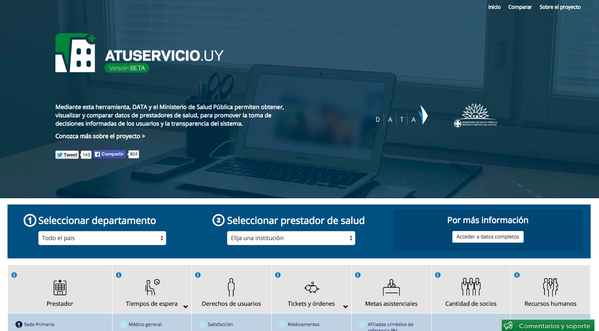

Uruguay's A Tu Servicio
Empowering Citizens to Make Data-Driven Decisions on Health Care
by David Sangokoya, Ali Clare, Stefaan Verhulst and Andrew Young
Impact
Sector
Location
IMPROVING GOVERNMENT
PUBLIC SECTOR
NONE
Read Time
Brief View None MINS
Full Story None MINS

Figure 1: A Tu Servicio home page
First launched as a pilot program in February 2015 by DATA Uruguay and the Ministry of Health, A Tu Servicio is a Web application based on open government data that provides easily digestible, searchable and visualized infographics of key performance indicators such as facility type, available medical specialties, procedures performed, wait times, goals of care, patient rights and human resources. This platform allows users to compare these indicators across all health care providers in the country, enabling users to make well-informed decisions about their health care providers through machine-readable, interoperable and accessible data that was previously unavailable. For example, users can search across public health care providers (such as Medica Uruguaya and CAMCEL) and private providers (such as Blue Cross Blue Shield) in Montevideo and compare data on the cost of birth control, average wait times and patient satisfaction. Such comparisons can allow a citizen to decide whether to stick with his or her current provider or switch to a new one. Enabling this type of comparison was not always easy, however, since, as Scrollini notes, “private providers were the worst in terms of compliance when sending the data to the Ministry.”

Figure 2: A Tu Servicio health service comparisons
The project emerged from a public consultation between the government and DATA Uruguay, a volunteer-based civil society organization committed to promoting open data, transparency, and access to information (http://datauy.org/). In 2013, DATA Uruguay had begun working with 180 Ciencia, a journalism portal, to create the application “Temporada de pases” (“Transfer season”) as part of a public service project to inform and empower citizens considering changing health care providers. The application relied on existing data published by the Ministry of Health; however, that data was generally of poor quality, often available only in closed formats, and included little metadata. The need for more open health care data quickly became apparent.
Spurred by the evident shortcomings of the “Temporada de pases” application, the Ministry of Health initiated a discussion with Data Uruguay about ways to make more data available to citizens. This discussion, held under the auspices of the ongoing Open Government Partnership (OGP) roundtable discussions about the Alliance for Open Government, soon resulted in a modest government grant (about $13,000) to create a pilot application that later became A Tu Servicio. DATA Uruguay also won additional funding from Avina Americas, an organization promoting sustainable development, and the Iniciativa Latinoamericana por los Datos Abiertos (“Latin American Open Data Initiative,” ILDA), a network of organizations seeking to promote research on and use of open data in the region.
The key role played by DATA Uruguay is one of the most interesting and important aspects of the A Tu Servicio story. It shows the vital function of intermediaries and civil society in promoting open data, facilitating discussions with the state, and nudging government agencies to release more and higher quality data.
At the same time, the role of the state itself cannot be underestimated. A Tu Servicio was supported from the outset by the Ministry of Health, whose encouragement and input (including in product design) was deemed critical to the success of the project. Even after the website was launched, DATA Uruguay and the state acted together in collecting user feedback and instituting improvements. This included working directly with health institutions to defuse their resistance to opening up data for comparison with other providers. Ultimately, the success and impact of A Tu Servicio (see next section for a discussion of impact) is testament to the importance of inter-sectoral partnership, and particularly collaboration between the state and civil society.
Read MoreLearn about our methodology